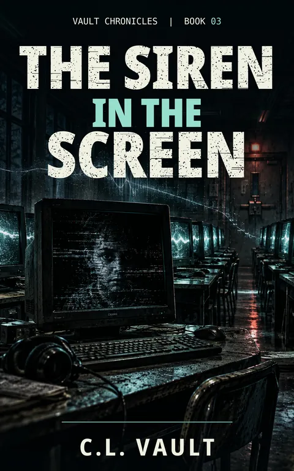

The Siren in the Screen
Vault Chronicles #3
Twenty-four monitors. Twenty-three screensavers. One screen that should not be awake.
Kindle Unlimited reader? Membership eligibility for individual books is shown on Amazon. The format links above are paid affiliate links.
Purchase links open Amazon. Format availability is taken from the public catalog record.
What is on file
Twenty-four monitors. Twenty-three screensavers. One screen that should not be awake.
The Static Clown's performance is over.
But something was watching.
At Oakhaven Middle School, Jace, Priya, and El discover that the west-wing computer lab has a problem nobody wants to discuss. One monitor stays dark even when it should be running. A three-second video shows a hallway that doesn't exist. Phones begin completing messages their owners never intended to write.
And somewhere in the school's wiring, a single musical note is calling someone closer.
Read the complete filed description
Then they find the name.
Samuel Hawthorne. Age twelve. A school technology program in 1999. A case marked transferred.
No completion date.
No record of him ever coming home.
For twenty-six years, something has survived inside the school's infrastructure, learning its systems, watching its students, and waiting for someone curious enough to follow the signal.
Mr. K knows more than he's willing to say. Priya's notebook is filling with evidence that doesn't want to stay remembered. And Jace is beginning to discover that the most dangerous kind of trap doesn't pull you toward it.
It simply makes you believe you were already going that way.
Some things are trapped because they're dangerous. Others become dangerous because they've been trapped too long.
The Siren in the Screen is Book 3 of The Vault Chronicles, a darkly funny science-fiction horror mystery set in the interconnected Harbor City universe, where forgotten names, altered memories, and ancient infrastructure are connected in ways nobody wants to explain.
THE NOTEBOOK STAYS OPEN.
Further material may surface.
No connected records are currently listed for this entry. Connections are added only when the archive can support them, and not merely because two stories share a city.
Request filing notices ↗